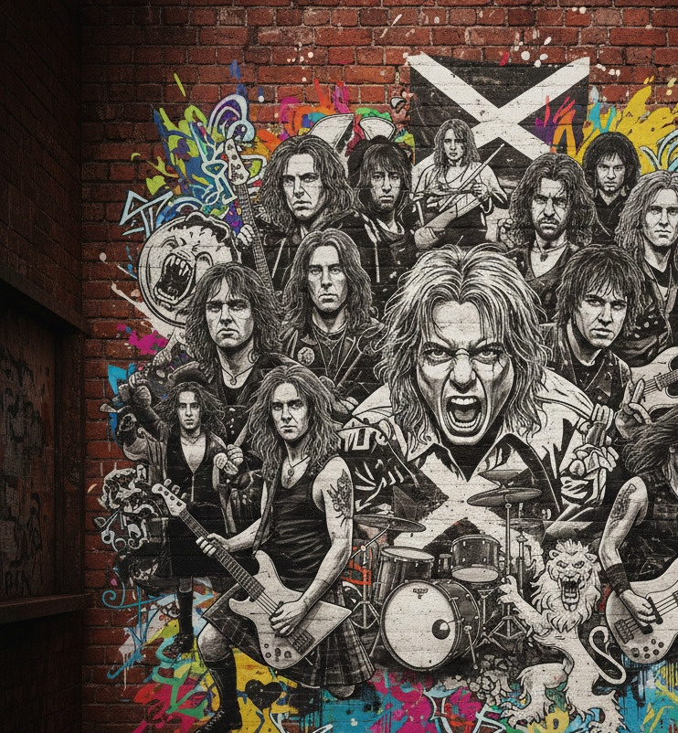

The Movement
Born from Scotland
ROCK.SCOT isn't just a radio station. We're a movement. The sound of a nation that lives and breathes rock music — from the Barrowlands to Belladrum, from Largs to Lochaber.
Born from the belief that Scotland deserves its own dedicated rock platform, we're here to amplify every riff, every drumbeat, every voice that makes Scottish rock culture what it is.
From garage bands to stadium legends, from underground metal to anthemic punk — we celebrate it all. Broadcasting 24/7 on DAB+ digital radio, uncompromising and unapologetic.
We launched in Inverclyde and North Ayrshire. But that's just the beginning. Our vision? All of Scotland.
One Scotland. One Rock Station. Unstoppable.
